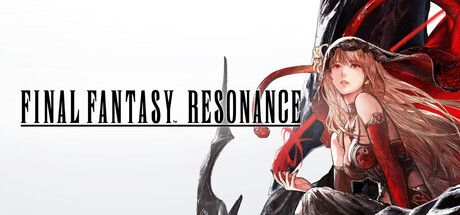
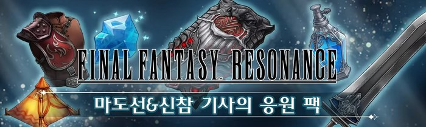
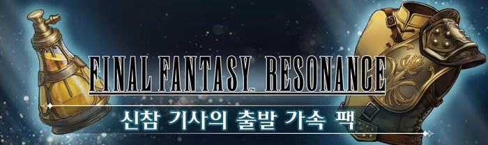
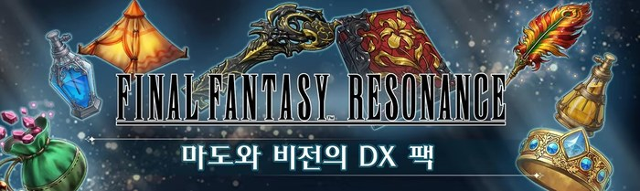
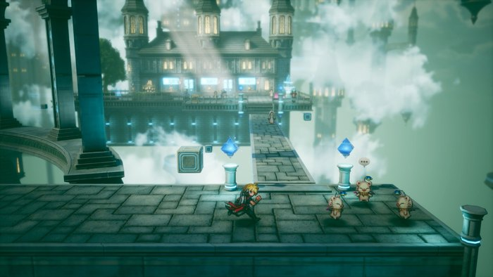

파이널 판타지 레조넌스 스팀·스위치2 예약 특전, 응원 팩 조건과 10월 23일
스팀 예약 창을 열면 특전 이름이 두 개 나란히 적혀 있고 기한까지 서로 달라 보여서, 어느 쪽이 내 몫인지 헷갈리기 쉬운데요. 파이널 판타지 레조넌스(FINAL FANTASY RESONANCE)는 발매가 코앞이라 더 마음이 급해지죠. 스팀 상점과 스퀘어 에닉스 공지를 기준으로 10월 20일 시점의 내용만 순서대로 정리했어요.
스팀 예약 특전은 '마도선&신참 기사의 응원 팩'이고, 발매일 이후에 구매하면 받을 수 없습니다. 본편 가격은 62,800원이고 예약 구매에는 할인이 붙지 않아요. 예약은 스팀 상점에서 걸 수 있습니다.
이 게임은 RPG이고, 파이널 판타지 시리즈가 도트 그래픽으로 이어졌다면 어떤 모습일까라는 콘셉트로 만든 최신작입니다. 크리스털을 둘러싼 이야기를 턴제 커맨드 배틀로 풀어 가요.

영문 로고 옆에 붉은 옷의 여성이 그려진 스팀 상점 대표 이미지예요(©SQUARE ENIX)
이미지 출처: 스팀 상점 – 스퀘어 에닉스 · 네이버 본문엔 받아서 재업로드 권장
응원 팩에는 무엇이 들어 있나요
응원 팩은 마도선 인증키, 장비 2종, 마석 조각, 소모품 2종으로 모두 여섯 가지입니다. 스팀 상점 소개란에 그림과 글로 같이 나와 있는 구성은 이렇습니다.
- 마도선 인증키 1개
- 왕국 기사단의 대검 1개
- 수련의 흉갑 1개 (획득 경험치가 일정량 올라가요)
- 마석 조각 1개
- 텐트 3개
- 미스트 포션 3개
흉갑이 두 특전에 하나씩 들어 있는데요, 응원 팩의 수련의 흉갑은 경험치, 출발 가속 팩의 행운의 흉갑은 재화를 일정량 더 주는 장비라 서로 다른 아이템이에요.

흉갑과 대검, 마석, 텐트, 포션이 한 장에 모여 있는 응원 팩 안내 이미지예요(©SQUARE ENIX)
이미지 출처: 스팀 상점 – 스퀘어 에닉스 · 네이버 본문엔 받아서 재업로드 권장
예약 특전이랑 사전 구매 특전은 뭐가 다른가요
예약 특전은 응원 팩이고, 사전 구매 특전은 따로 있는 '신참 기사의 출발 가속 팩'이에요. 11월 7일이라는 기한은 응원 팩이 아니라 출발 가속 팩 쪽에 붙은 조건이라서, 두 가지를 섞어 읽으면 날짜를 잘못 잡게 돼요.
| 구분 | 이름 | 구성 | 받는 조건 |
|---|---|---|---|
| 예약 특전 | 마도선&신참 기사의 응원 팩 | 위 여섯 가지 | 예약 구매자, 발매일 이후 구매는 미증정 |
| 사전 구매 특전 | 신참 기사의 출발 가속 팩 | 행운의 흉갑 1개(획득 재화 일정량 업), 미스트 에테르 1개 | 스팀 기준 2026년 11월 7일 01시 59분(한국 시간)까지 구매한 분 |
이 기한은 스팀 기준입니다. 플레이스테이션 공식 게임 소개 페이지는 같은 출발 가속 팩의 구매 기한을 2026년 11월 5일 23시 59분으로 적고 있는데, 시간대는 따로 적혀 있지 않아요. 그래서 스팀의 한국 시간 기한과 같은 기준으로 읽지는 않았어요.

노란 포션과 금빛 흉갑이 보이는 출발 가속 팩 안내 이미지예요(©SQUARE ENIX)
이미지 출처: 스팀 상점 – 스퀘어 에닉스 · 네이버 본문엔 받아서 재업로드 권장
스위치2는 10월 22일인데 스팀은 언제 열리나요
스퀘어 에닉스 공지에는 스위치 2를 포함한 콘솔이 10월 22일 목요일, 스팀 버전이 10월 23일 금요일 발매 예정으로 적혀 있는데요. 스팀 상점에 걸린 스팀 공지글 '예약 판매!'(2026.06.10)에도 10월 23일 금요일 발매로 나와 있지만, 상점 위쪽 출시 날짜 칸은 10월 22일로 보여서 두 표기가 달라 보일 수 있어요.
정확한 시각은 공지에 적혀 있지 않아서 스팀 상점에 뜨는 카운트다운으로 보시는 게 가장 정확합니다. 응원 팩 쪽은 상점에 마감 시각이 따로 적혀 있지 않아서, 날짜 표기가 갈리는 만큼 시각을 짐작하지 않는 게 안전합니다. 공지에는 스토어가 순차적으로 열리고 지역마다 오픈 시간이 다를 수 있다는 안내도 있었어요. 예약 판매는 2026년 6월 10일 공지에서 '오늘부터 순차적으로' 시작했다고 알렸고, 닌텐도 e숍과 Nintendo Store 다운로드 버전은 그때 아직 시작 전이었어요.
이 게임이 나오는 기종은 스위치 2, 스위치, PS5, Xbox Series X|S, 스팀, 윈도우용 마이크로소프트 스토어까지 여섯 곳이에요. 콘솔 쪽과 스팀의 하루 차이는 표로 보면 한눈에 들어오고, 스팀은 금요일에 열려서 출시 당일부터 토요일, 일요일까지 주말을 이어서 즐길 수 있어요. 이 글에서 스위치 2 항목은 발매일 시차 중심이고, 스위치 2 가격과 특전은 다루지 않아요.
| 구분 | 기종 | 발매일 |
|---|---|---|
| 콘솔 | 스위치 2 · 스위치 · PS5 · Xbox | 공지 기준 10월 22일 목요일 |
| PC(스팀) | 스팀 | 10월 23일 금요일 |
스탠다드랑 디지털 디럭스는 얼마나 차이 나나요
스팀 예약 구매 가격은 본편 62,800원, 디지털 디럭스 74,800원이라 12,000원 차이예요. 두 에디션 모두 예약 구매로 열려 있고 선물로도 살 수 있어요. 가격과 특전은 출시 전이라 바뀔 수 있는 값이고, 위 금액은 10월 20일 기준입니다.
디럭스는 본편에 '마도와 비전의 DX 팩'이 더해진 구성인데요, 이 DX 팩은 따로 파는 상품도 있어서 디럭스를 사면서 또 사면 겹치게 됩니다.

열쇠와 붉은 책, 깃털, 반지가 보이는 DX 팩 안내 이미지예요(©SQUARE ENIX)
이미지 출처: 스팀 상점 – 스퀘어 에닉스 · 네이버 본문엔 받아서 재업로드 권장
- 마도 아머 열쇠 1개
- 마인의 비전서 1개 (리미트 버스트 '헬 메테오'를 익혀요)
- 마스터리 링 1개
- 텐트, 미스트 포션, 미스트 에테르, 피닉스의 꼬리 각 5개
- 만능약 3개
예약 특전은 어떻게 받나요
특전은 DLC처럼 자동으로 들어오지 않고, 게임을 어느 정도 진행한 뒤 '미트라 마을' 숙소 앞 우편함에서 받아요. 응원 팩도 출발 가속 팩도 DX 팩도 모두 같은 우편함 방식이에요.
순서로 풀면 예약 구매, 발매 뒤 게임 시작, 어느 정도 진행, 미트라 마을 우편함 수령이에요. 마도선 인증키는 우편함에서 꺼낸 다음 메인 메뉴의 아이템 화면에서 켜 두면 비공정 외형이 바뀌니, 받자마자 아이템 화면부터 열어 보시는 게 좋겠죠.
예약 누르기 전에 뭘 확인하면 되나요
예약 전에는 한국어 범위, PC 사양, 이용 등급 세 가지를 보고, 확인이 안 되는 항목은 따로 알아 두시면 됩니다.
- 한국어: 인터페이스와 자막이 한국어로 나오고, 음성은 영어와 일본어예요. 지원 언어는 모두 8개이고, 대사는 영어나 일본어 음성에 한국어 자막이 붙는 구성이라고 보시면 됩니다.
- PC 사양: 스팀은 Windows만 지원하고 맥과 리눅스는 없어요. 최소 사양은 Windows 11, Ryzen 3 2300X 또는 Core i3-8100, RAM 8GB예요.
- 이용 등급: 한국에서는 12세 이용가이고 선정성과 폭력성 표시가 붙어 있어요.

게임 화면 분위기를 보여 주는, 구름 위 건물 앞 돌길을 달리는 도트 캐릭터 장면이에요(©SQUARE ENIX)
이미지 출처: 스팀 상점 – 스퀘어 에닉스 · 네이버 본문엔 받아서 재업로드 권장
시점에 따라 이렇게 고르면 돼요
· 발매 전에 마음이 정해졌다면 바로 예약 구매가 좋아요. 이 경우 응원 팩과 함께 본편 62,800원(10월 20일 기준)으로 시작해요.
· 체험판은 제1장 범위까지 해 볼 수 있고 저장 데이터가 본편으로 이어져요. 응원 팩은 발매 전 한정이니 체험판으로 정하실 거라면 발매일 전에 해 보시는 게 좋습니다. 발매 뒤에 사더라도 출발 가속 팩은 스팀 기준 11월 7일 01시 59분(한국 시간)까지 구매하면 받을 수 있어요.
· 디럭스는 동료 캐릭터의 리미트 버스트 '헬 메테오'를 익히는 마인의 비전서가 필요하거나 소모품을 넉넉히 받고 싶을 때 고르고, 그렇지 않다면 12,000원 덜 드는 본편이 부담이 적어요.
아래는 상점과 공지에서 확인이 되지 않아 이 글에서 단정하지 않은 항목이에요.
| 항목 | 상태 |
|---|---|
| 디지털 디럭스에 응원 팩·출발 가속 팩이 들어 있는지 | 상점에는 '본편과 DX 팩'만 적혀 있어요 |
| 스위치 2·스위치·PS5 가격과 예약 특전 | 스퀘어 에닉스 공지에는 가격이 없고 플레이스테이션 공식 소개 페이지에는 PS5 가격이 올라 있어요(콘솔 가격은 이 글에서 다루지 않아요) |
| 닌텐도 e숍 예약 시작 시점 | 공지 당시에는 앞으로 시작한다고만 적혀 있었어요 |
| 쿠폰·할인 | 확인된 쿠폰은 없어요 |
| 마이크로소프트 스토어 가격과 특전 | 대응 기종에는 들어 있지만 공식 안내를 찾지 못했어요 |
자주 묻는 질문
Q. 체험판은 어디까지 해 볼 수 있나요?
스팀 상점에 무료 체험판이 올라와 있어요. 제1장 범위까지 즐길 수 있고, 저장 데이터는 본편으로 이어진다고 적혀 있습니다. 먼저 해 보고 마음에 들면 그 진행을 이어서 본편으로 넘어갈 수 있다는 뜻이에요.
Q. 스팀에도 패키지판이 나오나요?
패키지판은 스위치 2, 스위치, PS5로만 나와요. 스팀 상점에는 본편과 디지털 디럭스 두 가지가 다운로드 구매로 올라와 있어요.
파이널 판타지 레조넌스 예약 특전 정리
특전이 두 개라는 것만 기억해 두면 날짜가 꼬일 일은 거의 없을 거예요. 미트라 마을 우편함을 열어 마도선 인증키를 켜 보는 순간이 벌써 기대되네요~ 다들 즐겁게 달려 봐요!
참고한 곳 (2026.10.20 기준)
· 스팀 상점 – 가격·예약 특전·사전 구매 특전·체험판·사양
· 스퀘어 에닉스 아시아 공지 – 발매일·대응 기종·에디션
· 플레이스테이션 공식 게임 소개 페이지 – PS5 가격 게재·사전 구매 특전 기한